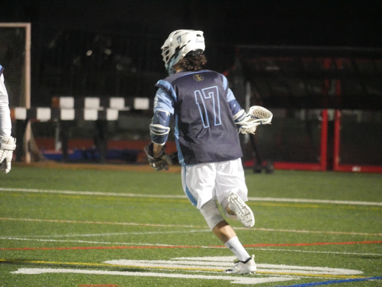

| |
|
|
|
My name is John Galluzzo. I a student athlete at URI currently beginning my seventh semester at this wonderful school. I have recently switched majors from Ocean Engineering to Applied Mathematics. That is in part what led me to CSC 106 - The Joy of Programming - taught by Professor Vic Fay-Wolfe and his wonderful teaching assistants. With their help and the amazing resources provided by Khan Academy I have begun my journey to becoming an advanced programmer. My first taste of this new world of skills has started with the language HTML, with which this website has been created.
Some other things you may like to know about me: I am a member of the URI Mens Club Lacrosse Team, on which I play the postion of midfielder. I also enjoy playing guitar in my spare time, as well as working out at the school gym. I am strong in mathematics and not so strong in Language Arts (so I apologize for any overlooked run-on sentences). I have a very new passion for programming, one that I hope doesnt fade away, and one that I hope to use one day in my career.
